|


|
|
|
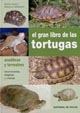 |
El gran libro de
las Tortugas.
Marta Avanzi,
Massimo Millefanti.
221 p�ginas, 2004,
Editorial De Vecchi.
|
|
|
El gran libro
ilustrado de las Tortugas.
Vincenzo Ferri.
188 p�ginas, 1993,
Editorial De Vecchi.
|
|
|
El Nuevo libro de las Tortugas.
Hartmut Wilke, Uwe Anders.
173 p�ginas, 2001, Editorial
Tikal. |
|
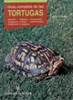 |
Gu�a completa de las tortugas.
John Coborn.
256 p�ginas, 1995, Editorial
Hispano Europea. |
|
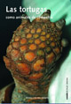 |
Las tortugas como animales de
compa��a. Nicasio J.
Brotons Campillo.
224 p�ginas, 2007, Ed. Consulta
de Difusi�n Veterinaria. |
|
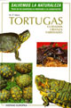 |
Tortugas, cuidados, crianza,
variedades. W.P. Mara.
96 p�ginas, 2003, Editorial
Hispano Europea. |
|
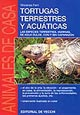 |
Tortugas Terrestres y Acu�ticas.
Vincenzo Ferri.
159 p�ginas, 1995, Editorial De Vecchi. |
|
|
Tortugas Terrestres y Acu�ticas
en el Terrario. Gerhard
Muller.
238 p�ginas, 1995, Editorial
Omega. |
|
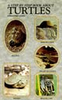 |
A step by step book about turtles.
Johannes Jahn, Herbert R., Ill
Axelrod.
64 p�ginas, 1987, T.F.H.
Publications. |
|
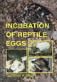 |
Incubation of Reptile Eggs.
Gunther Kohler.
214 p�ginas, 2005, Krieger
Publishing Company. |
|
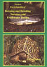 |
Practical Encyclopedia of Keeping
and Breeding Tortoises and Freshwater Turtles.
A.C. Highfield.
295 p�ginas, 1996, Carapace Press. |
|
|
The African spurred Tortoise
Geochelone sulcata in Captivity.
Russ Gurley.
80 p�ginas, 2002, Edition
Chimaira with the turtle and tortoise preservation group. |
|
|
The Tortoise and Turtle Feeding
Manual. A.C. Highfield.
52 p�ginas, 2000, Carapace Press. |
|
|
The Tortoise Trust Guide to
Tortoises and Turtles.
A.C. Highfield.
72 p�ginas, 2004 (3� Edici�n
revisada), Carapace Press. |
|
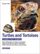 |
Turtles & Tortoises.
Hartmut Wilke.
128 p�ginas, 2002, Barron's
Educational Series. |
|
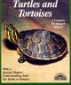 |
Turtles and Tortoises.
Richard Bartlett, Patricia Bartlett.
120 p�ginas, 1996, Barron's
Educational Series, Colecci�n "Complete Owner's Manual". |
|
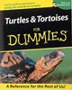 |
Turtles and Tortoises for Dummies.
Liz Palika.
292 p�ginas, 2001, Hungry Minds,
colecci�n "For Dummies". |
|
|
Turtles - Proceedings:
International Turtle and Tortoise Symposium Vienna 2002.
Varios Autores. Harald Artner, Balazs Farkas,
Victor Loehr (Editores).
618 p�ginas, 2006, Edition Chimaira. |
|
|
Les Tortues de nos jardins et
bassins. Jeanne Delorme.
204 p�ginas, 1995, Jeanne Delorme. |
|
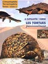 |
Les tortues passionn�ment.
Philippe Magnan, J�rome Maran.
84 p�ginas, 1999, JEH productions. |
|
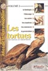 |
Les tortues terrestres et
aquatiques. R. Bour, A.
Cadi, G. Guyot, M. Louchart, J. Maran, P. Magnan, S. M�trailler,
D. Mosimann, L. Schilliger.
190 p�ginas, 2002, Animalia
Editions, Atlas de la terrariophilie volume 2. |
|
 |
Tortues d'eau douce et tortues
terrestres. Fran�oise
Claro, Patrick Bourdeau.
128 p�ginas, 1998(2� Edici�n),
Editions du Point V�t�rinaire. |
|
|
Tortues de Floride et Terrapene.
Bernard Devaux.
32 p�ginas, 2001, Editions
Soptom. |
|
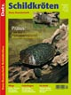 |
Datz-Sonderheft
2002 Schildkr�ten.
Michael Kokoscha.
74 p�ginas, 2002,
Ulmer (Eugen).
|
|
|
Die
geheimnisvolle Welt der Schildkr�ten.
John Lehrer.
127 p�ginas, 1994,
Karl M�ller, Erlangen.
|
|
|
Freilandanlagen f�r Schildkr�ten.
Marion Minch.
158 p�ginas, 2006, Edition Chimaira. |
|
|
PraxisRatgeber
Schildkr�tenern�hrung.
Michael Meyer.
128 p�ginas, 2001,
Edition Chimaira.
|
|
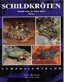 |
Schildkr�ten.
Harald Artner, Elmar
Meier.
184 p�ginas, 2000,
Natur und Tier-Verlag.
|
|
|
Schildkr�ten.
Johannes Jahn.
136 p�ginas, 1995,
Lehrmeister B�cherei.
|
|
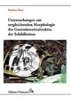 |
Untersuchungen
zur vergleichenden Morphologie des Gastrointestinaltraktes der
Schildkr�ten.
Markus Baur.
383 p�ginas, 2003,
Edition Chimaira.
|
|
|
Wasserschildkr�ten und
Landschildkr�ten. W. P.
Mara.
96 p�ginas, 1996, Bede. |
 
|
|